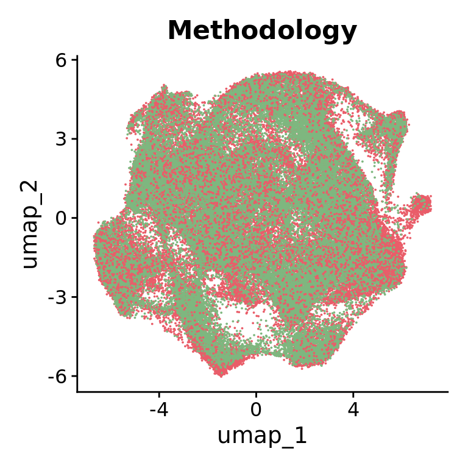
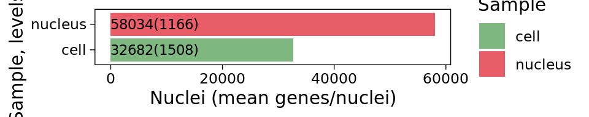
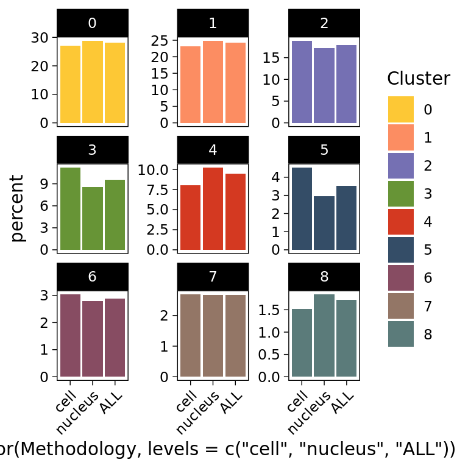
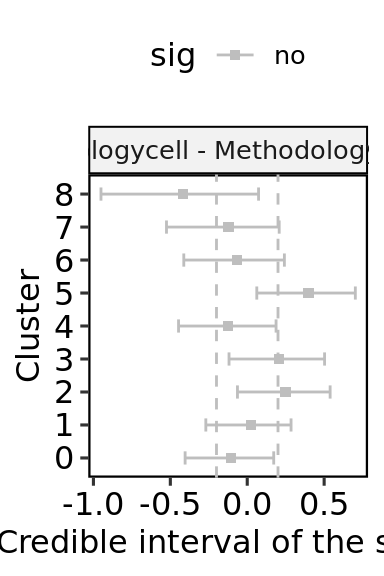

libs <- c("Seurat", "tidyverse", "sccomp","ggpubr")
suppressMessages(
suppressWarnings(sapply(libs, require, character.only =TRUE))
) Seurat tidyverse sccomp ggpubr
TRUE TRUE TRUE TRUE Ricardo Martins-Ferreira
The following script is related to Supplementary Figures 4 and 5. The “Methodology” variable (single cell or single nucleus RNA-seq) will be used as an example.
Representation of the HuMicA object annotated by the “Methodology” variable in a grouped UMAP plot.
Modularity Optimizer version 1.3.0 by Ludo Waltman and Nees Jan van Eck
Number of nodes: 90716
Number of edges: 5570085
Running Louvain algorithm...
Maximum modularity in 10 random starts: 0.9128
Number of communities: 14
Elapsed time: 46 secondsmethodology_colors <- c("#7EB77F","#E95D69")
DimPlot(Humica, reduction = "umap",
group.by = "Methodology",
cols = methodology_colors,
pt.size = 0.01) + NoLegend()
Representation of the HuMicA object annotated by the “Methodology” variable in a grouped UMAP plot.
# subset Humica object per category
cell<- Humica[,Humica@meta.data$Methodology=="cell"]
nucleus<- Humica[,Humica@meta.data$Methodology=="nucleus"]
# Calculate number of cells/nuclei and and number of genes per cells/nuclei
main.list <- list(cell,nucleus)
my.files <- c("cell","nucleus")
df <- data.frame(Sample=my.files, Nuclei="", Genes="")
number_nuclei= numeric(length(my.files))
number_genes = numeric(length(my.files))
for (i in 1:length(main.list)) {
number_nuclei[i]<- nrow(main.list[[i]]@meta.data)
number_genes[i] <- mean(main.list[[i]]@meta.data$nFeature_RNA)
}
df$Nuclei = number_nuclei
df$Genes = number_genes
df$Genes = format(round(df$Genes, 0))
df$Label <- paste0(df$Nuclei,"(",df$Genes,")")
df <- df[order(df$Nuclei),]
#plot
ggplot(df, aes(x= factor(Sample, levels = Sample), y=Nuclei, fill=Sample)) +
geom_bar(stat="identity",position = "stack")+
geom_text(aes(label = Label), hjust=0,position = position_fill(vjust = 0), size = 3,colour="black")+
coord_flip()+
ylab(label = "Nuclei (mean genes/nuclei)")+
scale_fill_manual(values = methodology_colors)+
theme_linedraw()+
theme(panel.grid.major = element_blank(), panel.grid.minor = element_blank(), axis.text = element_text(colour="black"))
# Calculate the proportions
data <- Humica@meta.data[,c("Sample_ID","Methodology","integrated_snn_res.0.2")]
colnames(data)<- c("Sample_ID","Methodology","Cluster")
data <- data %>% group_by(Methodology, Cluster) %>%
dplyr::summarise(Nb = n()) %>%
dplyr::mutate(C = sum(Nb))%>%
dplyr::mutate(percent = Nb/C*100)`summarise()` has grouped output by 'Methodology'. You can override using the
`.groups` argument.data$percent2 <- format(round(data$percent,2), nsmall=2)
#percentage of cluster in the whole dataset
Humica@meta.data$whole <- "ALL"
data2 <- Humica@meta.data[,c("whole","integrated_snn_res.0.2")]
colnames(data2)<- c("whole","Cluster")
data2 <- data2 %>% group_by(whole, Cluster) %>%
dplyr::summarise(Nb = n()) %>%
dplyr::mutate(C = sum(Nb))%>%
dplyr::mutate(percent = Nb/C*100)`summarise()` has grouped output by 'whole'. You can override using the
`.groups` argument.data2$percent2 <- format(round(data2$percent,2), nsmall=2)
colnames(data2)[1]<- "Methodology"
data <- rbind(data,data2)
## Stacked Bar plot per Group
data <-data[order(as.numeric(as.character(data$Cluster))), ]
data$Methodology<- as.factor(data$Methodology)
# add 0 values when there is no match
reference_data <- expand.grid(Methodology = unique(data$Methodology), Cluster = unique(data$Cluster))
result_data <- left_join(reference_data, data, by = c("Methodology", "Cluster"))
result_data[is.na(result_data)] <- 0
# Plot
ggplot(result_data, aes(x = factor(Methodology, levels = c("cell","nucleus","ALL")), y = percent, fill = Cluster))+
geom_bar(stat = "Identity")+
scale_fill_manual(values=color_clusters)+
#geom_text(aes(label = paste(percent2,"%")), position = position_stack(vjust = 0.5), size=2.5)+
theme_linedraw()+
facet_wrap(~Cluster,scales = "free_y", ncol = 3) + # Create indivgeneual barplots for each Group
theme(panel.grid=element_blank(), axis.text.x = element_text(angle = 45, hjust = 1))
https://github.com/stemangiola/sccomp
The contrast function is set to compare each category vs the largest one, which is “nucleus” in this case.
#with contrast
res = Humica |>
sccomp_glm(
formula_composition = ~ 0+Methodology,
contrasts = c("Methodologycell - Methodologynucleus"),
.sample =Sample_ID,
.cell_group = integrated_snn_res.0.2 ,
bimodal_mean_variability_association = TRUE,
cores = 5
) Warning: `sccomp_glm()` was deprecated in sccomp 1.7.1.
ℹ sccomp says: sccomp_glm() is soft-deprecated. Please use the new modular
framework instead, which includes sccomp_estimate(), sccomp_test(),
sccomp_remove_outliers(), among other functions.
ℹ The deprecated feature was likely used in the sccomp package.
Please report the issue at <https://github.com/stemangiola/sccomp/issues>.sccomp says: count column is an integer. The sum-constrained beta binomial model will be usedsccomp says: estimationsccomp says: the composition design matrix has columns: Methodologycell, Methodologynucleussccomp says: the variability design matrix has columns: (Intercept)sccomp says: From version 1.7.7 the model by default is fit with the variational inference method (variational_inference = TRUE; much faster). For a full Bayesian inference (HMC method; the gold standard) use variational_inference = FALSE.
This message is displayed once per session.Warning: The `approximate_posterior_inference` argument of `sccomp_estimate()` is
deprecated as of sccomp 1.7.7.
ℹ The argument approximate_posterior_inference is now deprecated please use
variational_inference. By default variational_inference value is inferred
from approximate_posterior_inference.
ℹ The deprecated feature was likely used in the sccomp package.
Please report the issue at <https://github.com/stemangiola/sccomp/issues>.sccomp says: outlier identification - step 1/2
sccomp says: outlier-free model fitting - step 2/2
sccomp says: the composition design matrix has columns: Methodologycell, Methodologynucleus
sccomp says: the variability design matrix has columns: (Intercept)# Plot
res$sig<- ifelse(res$c_FDR<0.05, "yes", "no")
ggplot(res, aes(x = factor(integrated_snn_res.0.2, levels= levels(Idents(Humica))),
y = res$c_effect, color=sig)) +
geom_point(stat = "Identity", shape = 15) +
scale_color_manual(values = c("grey","#A21F16"))+
geom_hline(yintercept = c(-0.2,0.2), linetype = "dashed", color = "grey") +
geom_errorbar(aes(ymin = c_lower, ymax = c_upper), width = 0.4) +
facet_wrap(~parameter,scales="free")+
ylab("Credible interval of the slope")+
xlab("Cluster")+
coord_flip()+
theme_pubr()+
border()Warning: Use of `res$c_effect` is discouraged.
ℹ Use `c_effect` instead.Warning: Use of `res$c_effect` is discouraged.
ℹ Use `c_effect` instead.
null device
1 Plot the obtained results